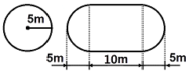

위험물기능사 (2013-01-27 기출문제)
1과목: 화재 예방과 소화방법
1. 제1종 분말소화약제의 적응 화재 급수는?
- A급
- BC급
- AB급
- ABC급
(정답률: 85%)

2. 제1류 위험물의 저장 방법에 대한 설명으로 틀린 것은?
- 조해성 물질은 방습에 주의한다.
- 무기과산화물은 물속에 보관한다.
- 분해를 촉진하는 물품과의 접촉을 피하여 저장한다.
- 복사열이 없고 환기가 잘되는 서늘한 곳에 저장한다.
(정답률: 88%)
3. 유류화재의 급수와 표시색상으로 옳은 것은?
- A급, 적색
- B급, 백색
- A급, 황색
- B급, 황색
(정답률: 89%)
4. 소화기의 사용방법으로 잘못된 것은?
- 적응화재에 따라 사용할 것
- 성능에 따라 방출거리 내에서 사용할 것
- 바람을 마주보며 소화할 것
- 양옆으로 비로 쓸 듯이 방사할 것
(정답률: 96%)
5. 다음 물질 중 분진폭발의 위험성이 가장 낮은 것은?
- 밀가루
- 알루미늄분말
- 모래
- 석탄
(정답률: 85%)
6. 열의 이동 원리 중 복사에 관한 예로 적당하지 않은 것은?
- 그늘이 시원한 이유
- 더러운 눈이 빨리 녹는 현상
- 보온병 내부를 거울벽으로 만드는 것
- 해풍과 육풍이 일어나는 원리
(정답률: 75%)
7. 그림과 같이 횡으로 설치한 원통형 위험물탱크에 대하여 탱크의 용량을 구하면 약 몇 m3 인가? (단, 공간용적은 탱크 내용적의 100분의 5로 한다.)

- 196.3
- 261.6
- 785.0
- 994.8
(정답률: 72%)
8. 위험물안전관리법령상의 규제에 관한 설명 중 틀린 것은?
- 지정수량 미만의 위험물의 저장 · 취급 및 운반은 시 · 도조례에 의하여 규제한다.
- 항공기에 의한 위험물의 저장 · 취급 및 운반은 위험물안전관리법의 규제대상이 아니다.
- 궤도에 의한 위험물의 저장 · 취급 및 운반은 위험물안전관리법의 규제대상이 아니다.
- 선박법의 선박에 의한 위험물의 저장 · 취급 및 운반은 위험물안전관리법의 규제대상이 아니다.
(정답률: 70%)
9. 제4류 위험물로만 나열된 것은?
- 특수인화물, 황산, 질산
- 알코올, 황린, 니트로화합물
- 동식물유류, 질산, 무기과산화물
- 제1석유류, 알코올류, 특수인화물
(정답률: 88%)
10. 위험물안전관리법령상 옥내소화전설비의 비상전원은 몇 분 이상 작동할 수 있어야 하는가?
- 45분
- 30분
- 20분
- 10분
(정답률: 64%)
11. 니트로화합물과 같은 가연성물질이 자체 내에 산소를 함유하고 있어 공기 중의 산소를 필요로 하지 않고 자체의 산소에 의해서 연소되는 현상은?
- 자기연소
- 등심연소
- 훈소연소
- 분해연소
(정답률: 92%)
12. 제1류 위험물인 과산화나트륨의 보관용기에 화재가 발생하였다. 소화약제로 가장 적당한 것은?
- 포 소화약제
- 물
- 마른모래
- 이산화탄소
(정답률: 82%)
13. 위험물안전관리법령에 따라 옥내소화전설비를 설치할 때 배관의 설치기준에 대한 설명으로 옳지 않은 것은?
- 배관용 탄소 강관(KS D 3507)을 사용할 수 있다.
- 주 배관의 입상관 구경은 최소 60mm 이상으로 한다.
- 펌프를 이용한 가압송수장치의 흡수관은 펌프마다 전용으로 설치한다.
- 원칙적으로 급수배관은 생활용수배관과 같이 사용 할 수 없으며 전용배관으로만 사용한다.
(정답률: 72%)
14. 위험물의 화재별 소화방법으로 옳지 않은 것은?
- 황린 - 분무주수에 의한 냉각소화
- 인화칼슘 - 분무주수에 의한 냉각소화
- 톨루엔 - 포에 의한 질식소화
- 질산메틸 - 주수에 의한 냉각소화
(정답률: 71%)
15. 옥내에서 지정수량 100배 이상을 취급하는 일반취급소에 설치하여야 하는 경보설비는? (단, 고인화점 위험물만을 취급하는 경우는 제외한다.)
- 비상경보설비
- 자동화재탐지설비
- 비상방송설비
- 비상벨설비 및 확성장치
(정답률: 83%)
16. 강화액소화기에 대한 설명이 아닌 것은?
- 알칼리 금속염류가 포함된 고농도의 수용액이다.
- A급화재에 적응성이 있다.
- 어는점이 낮아서 동절기에서 사용이 가능하다.
- 물의 표면장력을 강화시킨 것으로 심부화재에 효과적이다.
(정답률: 59%)
17. 인화점이 섭씨 200℃ 미만인 위험물을 저장하기 위하여 높이가 15m 이고 지름이 18m 인 옥외저장탱크를 설치하는 경우 옥외저장탱크와 방유제와의 사이에 유지하여야 하는 거리는?
- 5.0m 이상
- 6.0m 이상
- 7.5m 이상
- 9.0m 이상
(정답률: 53%)
18. 금속칼륨에 대한 초기의 소화약제로서 적합한 것은?
- 물
- 마른모래
- CCl4
- CO2
(정답률: 87%)
19. 위험물을 취급함에 있어서 정전기를 유효하게 제거하기 위한 설비를 설치하고자 한다. 위험물안전관리법령상 공기 중의 상대 습도를 몇 % 이상 되게 하여야 하는가?
- 50
- 60
- 70
- 80
(정답률: 91%)
20. 위험물안전관리법령에 따른 자동화재탐지설비의 설치기준에서 하나의 경계구역의 면적은 얼마 이하로 하여야 하는가? (단, 해당 건축물 그 밖의 공작물의 주요한 출입구에서 그 내부의 전체를 볼 수 없는 경우이다.)
- 500m2
- 600m2
- 800m2
- 1000m2
(정답률: 61%)
2과목: 위험물의 화학적 성질 및 취급
21. 위험물안전관리법령상 위험물에 해당하는 것은?
- 황산
- 비중이 1.41인 질산
- 53마이크로미터의 표준체를 통과하는 것이 50중량% 미만인 철의 분말
- 농도가 40중량%인 과산화수소
(정답률: 66%)
22. 위험물안전관리법령에 의한 위험물 운송에 관한 규정으로 틀린 것은?
- 이동탱크저장소에 의하여 위험물을 운송하는 자는 당해 위험물을 취급할 수 있는 국가기술자격자 또는 안전교육을 받은 자이어야 한다.
- 안전관리자 · 탱크시험자 · 위험물운송자 등 위험물의 안전관리와 관련된 업무를 수행하는 자는 시 · 도지사가 실시하는 안전교육을 받아야 한다.
- 운송책임자의 범위, 감독 또는 지원의 방법 등에 관한 구체적인 기준은 행정안전부령으로 정한다.
- 위험물운송자는 행정안전부령이 정하는 기준을 준수하는 등 당해 위험물의 안전확보를 위해 세심한 주의를 기울여야 한다.
(정답률: 69%)
23. 과산화바륨의 성질에 대한 설명 중 틀린 것은?
- 고온에서 열분해하여 산소를 발생한다.
- 황산과 반응하여 과산화수소를 만든다.
- 비중은 약 4.96 이다.
- 온수와 접촉하면 수소가스를 발생한다.
(정답률: 65%)
24. 과염소산칼륨의 일반적인 성질에 대한 설명 중 틀린 것은?
- 강한 산화제이다.
- 불연성 물질이다.
- 과일향이 나는 보라색 결정이다.
- 가열하여 완전 분해시키면 산소를 발생한다.
(정답률: 68%)
25. 물과 접촉하면 위험성이 증가하므로 주수소화를 할 수 없는 물질은?
- C6H2CH3(NO2)3
- NaNO3
- (C2H5)3Al
- (C6H5CO)2O2
(정답률: 64%)
26. 위험물에 대한 설명으로 옳은 것은?
- 적린은 암적색의 분말로서 조해성이 있는 자연발화성 물질이다.
- 황화린은 황색의 액체이며 상온에서 자연분해하여 이산화황과 오산화인을 발생한다.
- 유황은 미황색의 고체 또는 분말이며 많은 이성질체를 갖고 있는 전기 도체이다.
- 황린은 가연성 물질이며 마늘냄새가 나는 맹독성 물질이다.
(정답률: 54%)
27. 지정수량이 200kg인 물질은?
- 질산
- 피크린산
- 질산메틸
- 과산화벤조일
(정답률: 59%)
28. 위험물안전관리법령상 제6류 위험물이 아닌 것은?
- H3PO4
- IF5
- BrF5
- BrF3
(정답률: 65%)
29. 제4류 위험물의 공통적인 성질이 아닌 것은?
- 대부분 물보다 가볍고 물에 녹기 어렵다.
- 공기와 혼합된 증기는 연소의 우려가 있다.
- 인화되기 쉽다.
- 증기는 공기보다 가볍다.
(정답률: 74%)
30. 수소화나트륨의 소화약제로 적당하지 않은 것은?
- 물
- 건조사
- 팽창질석
- 팽창진주암
(정답률: 83%)
31. 과염소산나트륨의 성질이 아닌 것은?
- 수용성이다.
- 조해성이 있다.
- 분해온도는 약 400℃ 이다.
- 물보다 가볍다.
(정답률: 57%)
32. 위험물제조소의 위치 · 구조 및 설비의 기준에 대한 설명 중 틀린 것은?
- 벽 · 기둥 · 바닥 · 보 · 서까래는 내화재료로 하여야 한다.
- 제조소의 표지판은 한변이 30cm, 다른 한변이 60cm 이상의 크기로 한다.
- 화기엄금'을 표시하는 게시판은 적색바탕에 백색문자로 한다.
- 지정수량 10배를 초과한 위험물을 취급하는 제조소는 보유공지의 너비가 5m 이상 이어야 한다.
(정답률: 61%)
33. 물과 작용하여 메탄과 수소를 발생시키는 것은?
- Al4C3
- Mn3C
- Na2C2
- MgC2
(정답률: 44%)
34. 연면적이 1000제곱미터이고 지정수량의 80배의 위험물을 취급하며 지반면으로부터 5미터 높이에 위험물 취급설비가 있는 제조소의 소화난이도등급은?
- 소화난이도등급 Ⅰ
- 소화난이도등급 Ⅱ
- 소화난이도등급 Ⅲ
- 제시된 조건으로 판단할 수 없음
(정답률: 55%)
35. 트리니트로톨루엔의 작용기에 해당하는 것은?
- -NO
- -NO2
- -NO3
- -NO4
(정답률: 75%)
36. 위험물안전관리법령상 운송책임자의 감독 · 지원을 받아 운송하여야 하는 위험물은?
- 특수인화물
- 알킬리튬
- 질산구아니딘
- 히드라진 유도체
(정답률: 77%)
37. 위험물안전관리법령상 위험등급이 나머지 셋과 다른 하나는?
- 알코올류
- 제2석유류
- 제3석유류
- 동식물유류
(정답률: 74%)
38. 다음 위험물 중 상온에서 액체인 것은?
- 질산에틸
- 트리니트로톨루엔
- 셀룰로이드
- 피크린산
(정답률: 55%)
39. 위험물제조소의 게시판에 '화기주의'라고 쓰여 있다. 제 몇 류 위험물 제조소인가?
- 제1류
- 제2류
- 제3류
- 제4류
(정답률: 60%)
40. 제6류 위험물에 대한 설명으로 옳은 것은?
- 과염소산은 독성은 없지만 폭발의 위험이 있으므로 밀폐하여 보관한다.
- 과산화수소는 농도가 3% 이상일 때 단독으로 폭발하므로 취급에 주의한다.
- 질산은 자연발화의 위험이 높으므로 저온보관한다.
- 할로겐간화합물의 지정수량은 300kg 이다.
(정답률: 69%)
41. 적린의 성질에 대한 설명 중 틀린 것은?
- 물이나 이황화탄소에 녹지 않는다.
- 발화온도는 약 260℃ 정도이다.
- 연소할 때 인화수소 가스가 발생한다.
- 산화제가 섞여 있으면 마찰에 의해 착화하기 쉽다.
(정답률: 52%)
42. 트리니트로페놀의 성상에 대한 설명 중 틀린 것은?
- 융점은 약 61℃ 이고 비점은 약 120℃ 이다.
- 쓴 맛이 있으며 독성이 있다.
- 단독으로는 마찰, 충격에 비교적 안정하다.
- 알코올, 에테르, 벤젠에 녹는다.
(정답률: 37%)
43. 위험물안전관리법령에서 제3류 위험물에 해당하지 않는 것은?
- 알칼리금속
- 칼륨
- 황화린
- 황린
(정답률: 72%)
44. 위험물안전관리법령상 정기점검 대상인 제조소등의 조건이 아닌 것은?
- 예방규정 작성대상인 제조소등
- 지하탱크저장소
- 이동탱크저장소
- 지정수량 5배의 위험물을 취급하는 옥외탱크를 둔 제조소
(정답률: 65%)
45. Ca3P2 600kg을 저장하려 한다. 지정수량의 배수는 얼마인가?
- 2배
- 3배
- 4배
- 5배
(정답률: 60%)
46. 디에틸에테르의 보관 · 취급에 관한 설명으로 틀린 것은?
- 용기는 밀봉하여 보관한다.
- 환기가 잘 되는 곳에 보관한다.
- 정전기가 발생하지 않도록 취급한다.
- 저장용기에 빈 공간이 없게 가득 채워 보관한다.
(정답률: 84%)
47. 아닐린에 대한 설명으로 옳은 것은?
- 특유의 냄새를 가진 기름상 액체이다.
- 인화점이 0℃ 이하이어서 상온에서 인화의 위험이 높다.
- 황산과 같은 강산화제와 접촉하면 중화되어 안정하게 된다.
- 증기는 공기와 혼합하여 인화, 폭발의 위험은 없는 안정한 상태가 된다.
(정답률: 53%)
48. 벤젠의 저장 및 취급시 주의사항에 대한 설명으로 틀린 것은?
- 정전기 발생에 주의한다.
- 피부에 닿지 않도록 주의한다.
- 증기는 공기보다 가벼워 높은 곳에 체류하므로 환기에 주의한다.
- 통풍이 잘되는 서늘하고 어두운 곳에 저장한다.
(정답률: 76%)
49. 질산칼륨의 성질에 해당하는 것은?
- 무색 또는 흰색 결정이다.
- 물과 반응하면 폭발의 위험이 있다.
- 물에 녹지 않으나 알코올에 잘 녹는다.
- 황산, 목분과 혼합하면 흑색화약이 된다.
(정답률: 35%)
50. 위험물제조소등에 자체소방대를 두어야 할 대상의 위험물안전관리법령상 기준으로 옳은 것은? (단, 원칙적인 경우에 한한다.)
- 지정수량 3000배 이상의 위험물을 저장하는 저장소 또는 제조소
- 지정수량 3000배 이상의 위험물을 취급하는 제조소 또는 일반취급소
- 지정수량 3000배 이상의 제4류 위험물을 저장하는 저장소 또는 제조소
- 지정수량 3000배 이상의 제4류 위험물을 취급하는 제조소 또는 일반취급소
(정답률: 49%)
51. [보기]의 위험물을 위험등급 Ⅰ, 위험등급 Ⅱ, 위험등급 Ⅲ의 순서로 옳게 나열한 것은?
- 황린, 인화칼슘, 리튬
- 황린, 리튬, 인화칼슘
- 인화칼슘, 황린, 리튬
- 인화칼슘, 리튬, 황린
(정답률: 67%)
52. 휘발유에 대한 설명으로 옳지 않은 것은?
- 지정수량은 200리터이다.
- 전기의 불량도체로서 정전기 축적이 용이하다.
- 원유의 성질 · 상태 · 처리방법에 따라 탄화수소의 혼합비율이 다르다.
- 발화점은 -43 ~ -20℃ 정도이다.
(정답률: 52%)
53. 위험물 운반 시 동일한 트럭에 제1류 위험물과 함께 적재할 수 있는 유별은? (단, 지정수량의 5배 이상인 경우이다.)
- 제3류
- 제4류
- 제6류
- 없음
(정답률: 86%)
54. 황린의 저장 및 취급에 있어서 주의할 사항 중 옳지 않은 것은?
- 독성이 있으므로 취급에 주의할 것
- 물과의 접촉을 피할 것
- 산화제와의 접촉을 피할 것
- 화기의 접근을 피할 것
(정답률: 79%)
55. 위험물안전관리법상 제조소등의 허가 취소 또는 사용정지의 사유에 해당하지 않는 것은?
- 안전교육 대상자가 교육을 받지 아니한 때
- 완공검사를 받지 않고 제조소등을 사용한 때
- 위험물안전관리자를 선임하지 아니한 때
- 제조소등의 정기검사를 받지 아니한 때
(정답률: 56%)
56. 위험물의 유별 구분이 나머지 셋과 다른 하나는?
- 니트로글리콜
- 벤젠
- 아조벤젠
- 디니트로벤젠
(정답률: 52%)
57. 제4류 위험물 중 제1석유류에 속하는 것은?
- 에틸렌글리콜
- 글리세린
- 아세톤
- n-부탄올
(정답률: 71%)
58. 횡으로 설치한 원통형 위험물 저장탱크의 내용적이 500L 일 때 공간용적은 최소 몇 L 이어야 하는가? (단, 원칙적인 경우에 한한다.)
- 15
- 25
- 35
- 50
(정답률: 56%)
59. 탄화칼슘을 습한 공기 중에 보관하면 위험한 이유로 가장 옳은 것은?
- 아세틸렌과 공기가 혼합된 폭발성 가스가 생성될 수 있으므로
- 에틸렌과 공기 중 질소가 혼합된 폭발성 가스가 생성될 수 있으므로
- 분진폭발의 위험성이 증가하기 때문에
- 포스핀과 같은 독성 가스가 발생하기 때문에
(정답률: 59%)
60. 인화성액체 위험물을 저장 또는 취급하는 옥외탱크저장소의 방유제내에 용량 10만L 와 5만L 인 옥외저장탱크 2기를 설치하는 경우에 확보하여야 하는 방유제의 용량은?
- 50000L 이상
- 80000L 이상
- 110000L 이상
- 150000L 이상
(정답률: 69%)